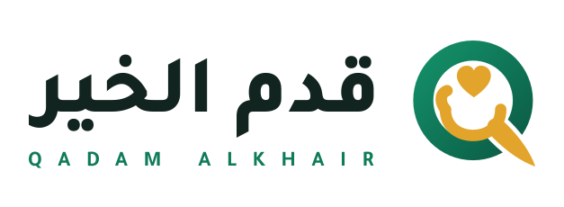
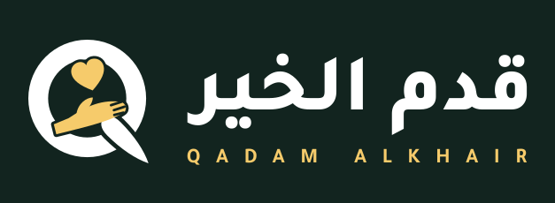
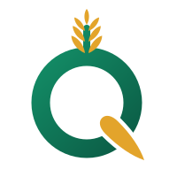
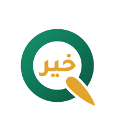
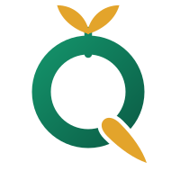
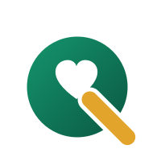

١ الفكرة
كفٌّ تُقدِّم الخير — وهو فعل الاسم نفسه.
الحلقة
حرف Q اللاتيني، وهو نفسه كأس حرف ق العربي.
الكفّ المفتوح
كفٌّ تُقدِّم ولا تأخذ — فعل الاسم نفسه: قدِّم.
القلب
الخير الذي يُقدَّم، محمولاً على الكفّ.
الورقة الذهبية
ذيل الـQ، والذهبي لون القمح والرزق.
٢ النسخ الأساسية
horizontal

horizontal-rtl
horizontal-darkmark
٣ لون واحد وخلفيات
٤ الألوان
Qadam Green
#0F7B5A
Deep Green
#0A5440
Light Green
#159A6F
Khair Gold
#E3A42B
Light Gold
#F6CB6B
Ink
#12241F
Cream
#FBF7EF
٥ المقاسات الصغيرة
16px
32px
48px
72px
200px wide
٦ مقترحات بديلة

alt — wheat ear
alt — the word خير
alt — seedling
alt — heart counter
٧ قواعد الاستخدام
- اترك حول الشعار مساحة فارغة لا تقل عن نصف ارتفاع العلامة.
- أقل عرض للشعار الأفقي: 120px شاشة / 30mm طباعة. العلامة وحدها: 24px.
- ممنوع تغيير الألوان أو استبدال الذهبي.
- ممنوع المدّ أو الضغط أو التدوير أو إضافة ظل.
- ممنوع وضع النسخة الملوّنة على خلفية داكنة أو مزدحمة — استخدم
-dark أو -mono-white.
- للطباعة الكبيرة استخدم ملفات SVG دائماً.